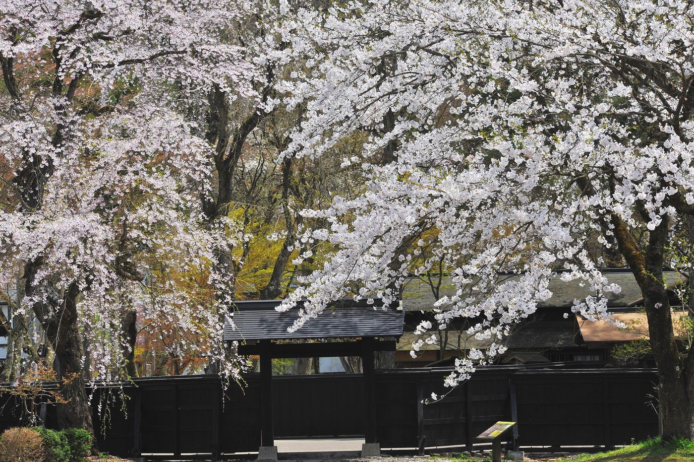
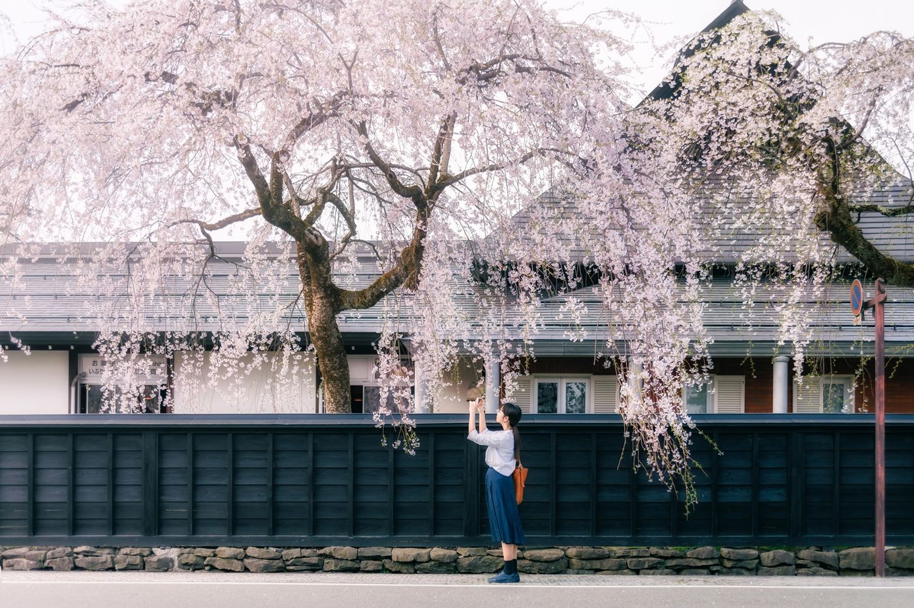
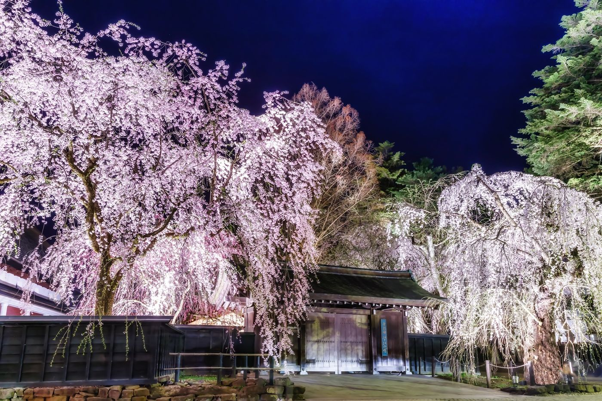
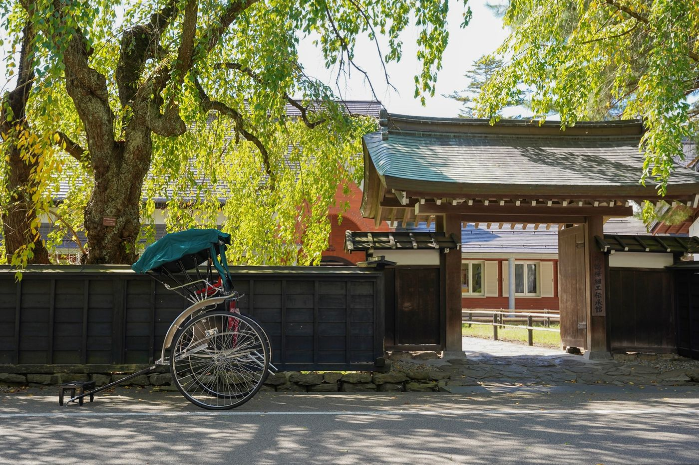
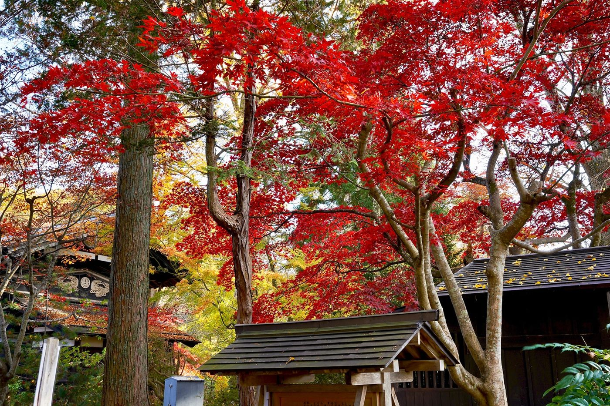
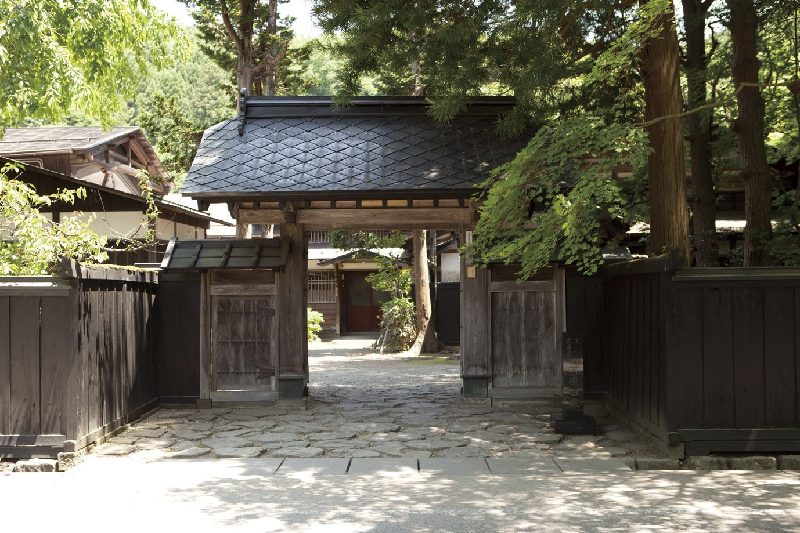

A street from the age of the samurai
Kakunodate was a castle town where samurai families lived along wide streets lined with black wooden walls. The samurai district is protected as a national preservation area for historic buildings, and several of the old residences are open to visitors. People in Japan sometimes call it the “little Kyoto of the north.”

Spring: weeping cherries
The story goes that the weeping cherries began with three saplings brought from Kyoto in the 17th century by a lord’s bride. Today about 400 weeping cherry trees grow in the town, and 162 of them are designated national natural monuments. Their branches pour over the black walls like a curtain.


Left: the samurai district by day. Right: the trees are lit up in the evening during the festival.
Beat the crowds: the festival is extremely busy, especially on weekends. Come early in the morning, before the tour buses arrive.
Beautiful in every season
Spring is famous, but the samurai district is quieter and just as beautiful the rest of the year: deep green in summer, blazing maples in autumn, and deep snow in winter.



Step inside a samurai house
Aoyagi House
A large samurai estate with a thatched main house and six small museums on the grounds: samurai armor and weapons, local history, antique clocks and cameras. Entry ¥500.
Kabazaiku Denshokan
A museum of kabazaiku, Kakunodate’s cherry-bark craft, where you can watch artisans at work. Entry ¥500.
Matsumoto House and others
The simple home of a lower-ranking samurai. From spring to autumn, artisans demonstrate itaya maple-wood basket weaving here. Several other residences on the street are also free to enter.
Ishiguro House closes to the public at the end of November 2026.
Kakunodate + Mt. Moriyoshi
Kakunodate is where the Akita Nairiku Line begins. In winter, spend a night here, then take the morning train north through the snow to see the snow monsters of Mt. Moriyoshi.
Official links
Confirm festival dates, opening hours and fees with these sources before you go.